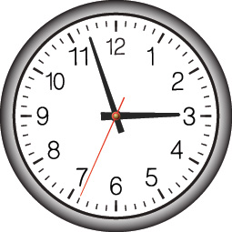
When using DDD we are on a quest for deep learning about how the business works, and then to model software based on the extent of our learning. It’s really a process of learning, experimenting, challenging, learning more, and modeling again. We need to crunch and distill knowledge in great quantities and produce a design that is effective in meeting the strategic needs of an organization. The challenge is that we have to learn quickly. In a fast-paced industry we are usually working against time, because time matters, and time generally drives many of our decisions, possibly even more than it should. If we don’t deliver on time and within budget, no matter what we have achieved with the software, we seem to have failed. And everyone is counting on us to succeed in every way.
Some have made efforts to convince management that most project time estimations are valueless and that they cannot be successfully used. I am not sure how those efforts are working out in the large, but every client with whom I work is still being pressured to deliver within very specific time frames, which forces timeboxing into the design/implementation process. At best it’s a constant struggle between software development and management.
Unfortunately, one common response to this negative pressure is to try to economize and shorten timelines by eliminating design. Recall from the first chapter that design is inevitable, and that either you will do poorly as a result of bad design, or you will succeed by delivering with an effective design, and possibly even with a good design. So, what you should attempt to do is meet the demands of time squarely and design in an accelerated way, using approaches that will help you deliver the very best design possible within the limits of time that you face.
To that end I provide some very useful design acceleration and project management tools in this chapter. First I discuss Event Storming and then conclude with a way to leverage the artifacts produced by that collaboration process to create estimates that are meaningful and, best of all, attainable.
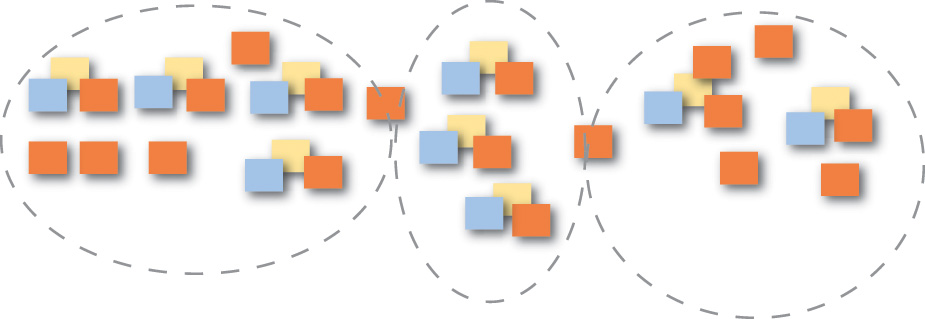
Event Storming is a rapid design technique that is meant to engage both Domain Experts and developers in a fast-paced learning process. It is focused on the business and business process rather than on nouns and data.
Prior to learning Event Storming I used a technique that I called event-driven modeling. It usually involved conversations, concrete scenarios, and event-centric modeling using very lightweight UML. The UML-specific steps could be achieved on a whiteboard alone and could also be captured in a tool. However, as you probably know, few business people are informed and proficient in even a minimalistic use of UML. So, this left most of the modeling part of the exercise to me or another developer who understood the basics of UML. It was a very useful approach, but there had to be a way to get business experts more directly involved in the process. That probably meant leaving out UML in favor of a more engaging tool.
I first learned about Event Storming years ago from Alberto Brandolini [Ziobrando] , who had also experimented with another form of event-driven modeling. On one occasion, being short on time, Alberto decided that he should ditch the UML and use sticky notes instead. This was the birth of an approach to rapid learning and software design that got everybody in the room very directly involved in the process. Here are some of its advantages:
• It is a very tactile approach. Everyone gets a pad of sticky notes and a pen and is responsible for contributing to the learning and design sessions. Both business people and developers stand on equal ground as they learn together. Everyone provides input to the Ubiquitous Language.
• It focuses everyone on events and the business process rather than on classes and the database.
• It is a very visual approach, which dismisses code from the experimentation and puts everyone on a level footing with the design process.
• It is very fast and very cheap to perform. You can literally storm out a new Core Domain in rough format in a matter of hours rather than weeks. If you write something on a sticky note that you later decide doesn’t work, you wad up the sticky note and throw it away. It costs you only a penny or two for that mistake, and no one is going to resist the opportunity to refine due to effort already invested.
• Your team will have breakthroughs in understanding. Period. It happens every time. Some will come to the session thinking that they have a pretty good understanding of the specific core business model, but no matter, they always leave with a greater understanding and even new insights about the business process.
• Everybody learns something. Whether you are a Domain Expert or a software developer, you will walk away from the sessions with a crisp, clear understanding of the model at hand. This is different from achieving breakthroughs and is important in its own right. In many projects, at least some project members, and possibly many, do not understand what they are working on until it is too late and the damage is already in the code. Storming out a model helps everyone clear up misunderstandings and move forward with a unified direction and purpose.
• This implies that you are also identifying problems in both the model and in understanding as early and quickly as possible. Iron out misunderstandings and leverage the outcome as new insights. Everybody in the room benefits.
• You can use Event Storming for both big-picture and design-level modeling. Doing big-picture storming will be less precise, while design-level storming will lead you toward certain software artifacts.
• It is unnecessary to limit the storming sessions to one. You can start off with a two-hour storming session, then take a break. Sleep on your accomplishments and return the next day to spend another hour or two to expand and refine. If you do this for two hours a day for three or four days, you will gain a deep understanding of your Core Domain and integrations with your surrounding Subdomains.
Here is a list of the people, mindset, and supplies you will need to storm out a model:
• Having the right people is essential, which means the Domain Expert(s) and developers who are to work on the model. Everyone is going to have some of the questions and some of the answers. In order to support each other, they all need to be in the same room during the modeling sessions.
• Everyone should come with an open mind that is free of strict judgment. The biggest mistake I see during Event Storming sessions is people trying to be too correct too soon. You should rather be fully determined to create far too many events. More events is better than fewer events, because that’s what will make you learn the most. There is time to refine later, and refinement is fast and cheap.
• Have on hand an assortment of colors of sticky notes, and plenty of them. At a minimum you need these colors: orange, purple/red, light blue, pale yellow, lilac, and pink. You may find that other colors (such as green; see later examples) come in handy. The sticky note dimensions can be square (3 inches by 3 inches, or 7.62 cm by 7.62 cm) rather than the wider variety that are rectangular. You don’t need to write much on the sticky note; usually just a few words will do. Consider getting the extra-sticky variety. You don’t want your sticky notes falling on the floor.
• Provide one black marker pen for each person, which will enable handwriting to show up bold and clear. Fine-tip markers are best.
• Find a wide wall where you can model. Width is more important than height, but your modeling surface should be approximately one meter/yard high. Width should be practically unlimited, but something in the range of 10 meters/yards should be considered a minimum. In lieu of such a wall being available, you can always use a long conference table or the floor. The problem with a table is that it will ultimately limit your modeling space. The problem with the floor is that it might not be accessible to everyone on the team. A wall is best.
• Obtain a long roll of paper, such as can often be found at art stores, teaching supply stores, and even at Ikea stores. The paper should be to the dimensions described previously, with at least 10 meters/yards in width and 1 meter/yard in height. Hang the paper on the wall using strong tape. Some may decide to forgo the paper and just work on whiteboards. This may work for a while, but the sticky notes tend to lose adhesion over time on whiteboards, especially if they are pulled up and restuck in different locations. Stickies adhere longer when they are applied to paper. If you intend to model for brief periods of time over three or four days, rather than in one long session, longevity of stickiness is important.
Given the basic supplies and having the right people participating in the session, you are ready to begin. Consider each of the steps, one by one.
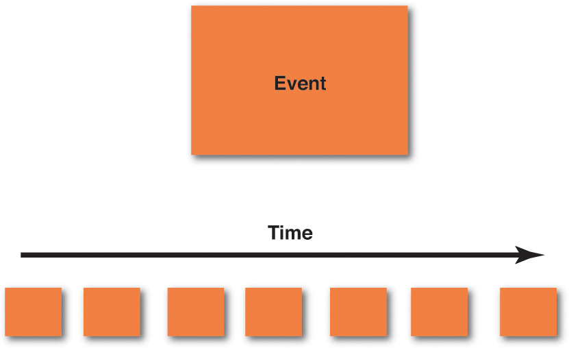
1. Storm out the business process by creating a series of Domain Events on sticky notes. The most popular color to use for Domain Events is orange. Using orange makes the Domain Events stand out most prominently on the modeling surface.
The following are some basic guidelines that should be employed as you create your Domain Events:
• Creating Domain Events first should emphasize that we have our first and primary focus on the business process, not on the data and its structure. It may take your team 10 to 15 minutes to warm up to this, but follow the steps just as I outline them here. Don’t be tempted to jump ahead.
• Write the name of each Domain Event
on a sticky note. The name, as you learned in the previous chapter, should be a verb stated in the
past tense. For example, an event may be named ProductCreated
, and another may be named BacklogItemCommitted
. (You can certainly break these names into multiple lines on the sticky notes.) If you are doing big-picture storming and you think that these names are too precise for the participants, use other names.
• Place the sticky notes on your modeling surface in time order, that is, from left to right in the order in which each event occurs in the domain. You start with the first Domain Events to the far left of your modeling surface and then move gradually to the right. Sometimes you won’t have a good understanding of the time order, in which case you should just put the corresponding Domain Events somewhere in the model. Figure out the “when” part, which will probably become obvious, later.
• A Domain Event that happens in parallel with another according to your business process can be located under the Domain Event that happens at the same time. So, you use vertical space to represent parallel processing.
• As you go through this part of the storming session, you are going to find trouble spots in your existing or new business process. Clearly mark these with a purple/red sticky note and some text that explains why it’s a problem. You need to invest time at such points to learn more.
• Sometimes the outcome of a Domain Event
is a Process
that needs to run. This could be a single step or multiple complex steps. Each Domain Event
that causes a Proces
s to be executed should be captured and named on a lilac sticky note. Draw a line with an arrowhead from the Domain Event
to the named Process
(lilac sticky note). Model a fine-grained Domain Event
only if it is important to your Core Domain.
Most likely a user registration process is a necessity but probably not considered a core feature of your application. Model the registration process as one single coarse-grained event, UserRegistered
, and move on. Put your concentrated efforts into more important events.
If you think you have exhausted all possible important Domain Events , it may be time to take a break and come back to the modeling session later. Returning to the modeling surface a day later will no doubt cause you to find missing concepts and to refine or toss out superficial ones that you previously considered important. Even so, at some point you will have identified most of the Domain Events that are of greatest importance. At that time you should move on to the next step.
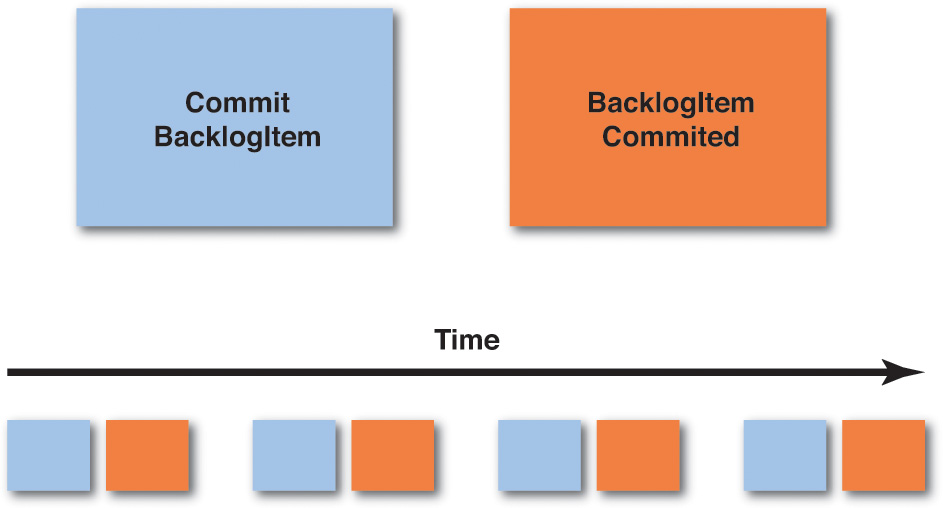
2.
Create the Commands that cause each Domain Event.
Sometimes a Domain Event
will be the outcome of a happening in another system, and it will flow into your system as a result. Still, often a Command
will be the outcome of some user gesture, and that Command
, when carried out, will cause a Domain Event.
The Command
should be stated in the imperative, such as CreateProduct
and CommitBacklogItem
. These are some basic guidelines:
• On the light blue sticky notes, write the name of the Command
that causes each corresponding Domain Event.
For example, if you have a Domain Event
named BacklogItemCommitted
, the corresponding Command
that causes that event is named CommitBacklogItem
.
• Place the light blue sticky note of the Command just to the left of the Domain Event that it causes. They are associated in pairs: Command/Event , Command/Event , Command/Event , and so on. Remember that some Domain Events will occur because of time limits being reached and so may not have a corresponding Command that explicitly causes them.
• If there is a specific user role that performs an action, and it is important to specify, you can place a small, bright yellow sticky note on the lower left corner of the light blue Command with a stick figure and the name of the role. In the above figure, “Product Owner” would be the role that performs the Command.
• Sometimes a Command will cause a Process to be run. This could be a single step or multiple complex steps. Each Command that causes a Process to be executed should be captured and named on a lilac sticky note. Draw a line with an arrowhead from the Command to the named Process (lilac sticky note). The Process will actually cause one or more Commands and subsequent Domain Events , and if you know what those are now, create sticky notes for them and show them emitting from the Process.
• Continue to move from left to right in time order just as you did when first creating each of the Domain Events.
• It is possible that creating Commands will cause you to think about Domain Events (as above when discovering lilac Processes , or other ones) that you didn’t previously envision. Go ahead and address this discovery by placing the newly discovered Domain Event on the modeling surface along with its corresponding Command.
• You may also find that there is only one Command that causes multiple Domain Events. That’s fine; model the one Command and place it to the left of the multiple Domain Events that it causes.
Once you have all of the Commands associated with the Domain Events that they cause, you are ready to move on to the next step.
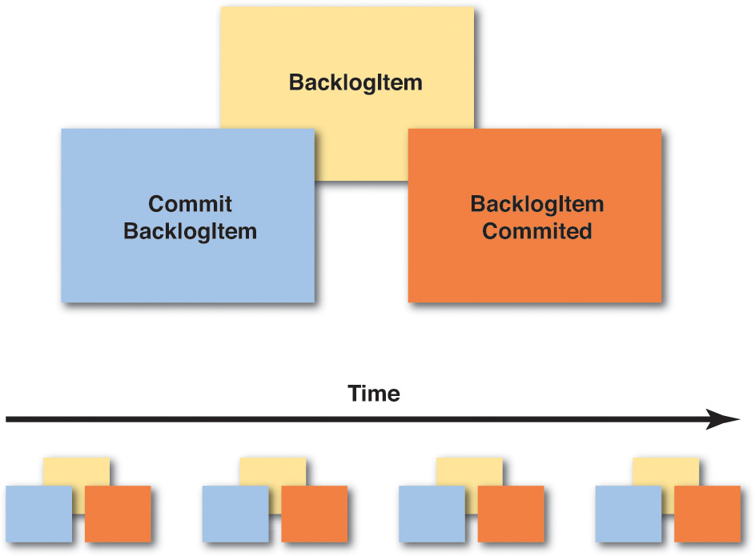
3. Associate the Entity/Aggregate on which the Command is executed and that produces the Domain Event outcome. This is the data holder where Commands are executed and Domain Events are emitted. Entity relationship diagrams are often the first and most popular step in today’s IT world, but it is a big mistake to start here. Business people don’t understand them well, and they can shut down conversations quickly. In fact, this step has been relegated to third place in Event Storming , because we are more focused on the business process than on the data. Even so, we do need to think about data at some point, and that point is now. At this stage, business experts will likely understand that the data comes into play. Here are some guidelines for modeling the Aggregates :
• If the business people don’t like the word Aggregate
, or if it confuses them in any way, you should use another name. Usually
they can understand Entity
, or you could just call it Data.
The important thing is that the sticky allows the team to communicate clearly about the concept that it represents. Use the pale yellow sticky notes for all Aggregates
and write the name of an Aggregate
on each sticky note. This is a noun, such as Product
or BacklogItem
. You will do this for each Aggregate
in your model.
• Place the Aggregate sticky note behind and slightly above the Command and Domain Event pairs. In other words, you should be able to read the noun written on the Aggregate sticky note, but the Command and Domain Event pairs should adhere to the lower part of the Aggregate sticky to indicate that they are associated. If you really want to put a little space between the stickies that’s fine, but just be clear which Commands and Domain Events belong to which Aggregate.
• As you move across your business process timeline, you will probably find that Aggregates are repeatedly used. Don’t rearrange your timeline in order to move all Command/Event pairs under a single Aggregate sticky note. Rather, create the same Aggregate noun on multiple sticky notes and place them repeatedly on the timeline where the corresponding Command/Event pairs occur. The main point is to model the business process; the business process occurs over time.
• It’s possible that as you think about the data associated with various actions, you may discover new Domain Events. Don’t ignore these. Rather, place the newly discovered Domain Events along with the corresponding Commands and Aggregates on the modeling surface. You may also discover that some of the Aggregates are too complex, and you need to break these into a managed Process (lilac sticky). Don’t ignore these opportunities.
Once you have completed this part of the design stage, you are approaching some of the extra steps that you can perform if you choose to. Also understand that if you are using Event Sourcing , as described in the previous chapter, you have already come a long way toward understanding your Core Domain implementation, because there is a large overlap in Event Storming and Event Sourcing. Of course, the closer your storming is to the big picture, the further it potentially is from actual implementation. Still, you can use this same technique to reach a design-level view. In my experience teams tend to move in and out of big-picture and design-level within the same sessions. In the end your need to learn certain details will drive you beyond the big picture to reach a design-level model where it is essential.
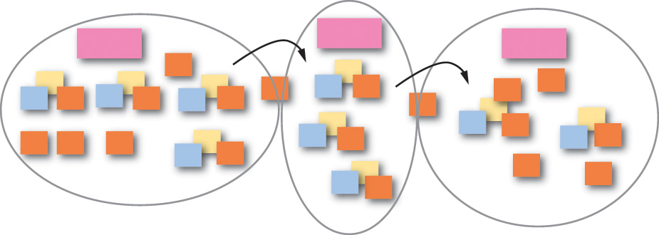
4. Draw boundaries and lines with arrows to show flow on your modeling surface. You have very likely discovered that there are multiple models in play, and Domain Events that flow between models, in your Event Storming sessions. Here’s how to deal with that:
• In summary, you will very likely find boundaries under the following conditions: departmental divisions, when different business people have conflicting definitions for the same term, or when a concept is important but not really part of the Core Domain.
• You can use your black marker pens to draw on the paper modeling surface. Show context and other boundaries. Use solid lines for Bounded Contexts and dashed lines for Subdomains. Obviously drawing boundaries on the paper is permanent, so be sure you understand this level of detail before wading in. If you want to start by bounding models with less permanence, use the pink stickies to mark general areas and withhold drawing boundaries with permanent markers until your confidence justifies it.
• Place the pink sticky notes inside various boundaries and put the name that applies inside the boundary on those sticky notes. This names your Bounded Contexts.
• Draw lines with arrowheads to show the direction of Domain Events flowing between Bounded Contexts. This is an easy way to communicate how some Domain Events arrive in your system without being caused by a Command in your Bounded Context.
Any other details about these steps should be intuitively obvious. Just use boundaries and lines to communicate.
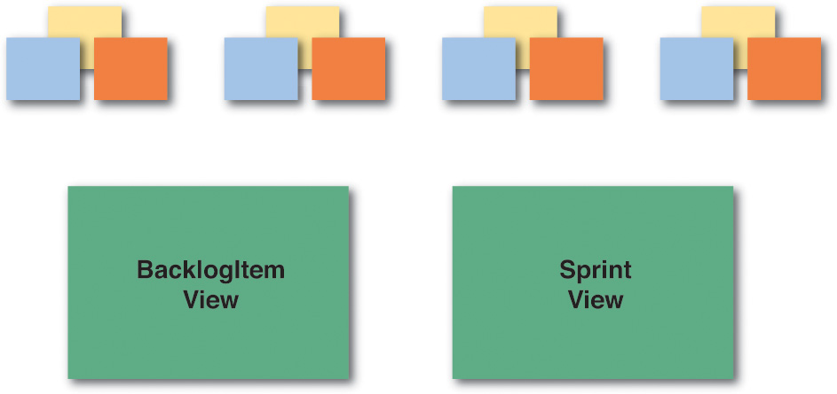
5. Identify the various views that your users will need to carry out their actions, and important roles for various users.
• You won’t necessarily need to show every view that your user interface will provide, or any at all for that matter. If you decide to show any views, they should be those that are significant and require some special care in creating. These view artifacts can be represented by green sticky notes on the modeling surface. If it helps, draw a quick mockup (or wireframe) of the user interface views that are most important.
• You can also use bright yellow sticky notes to represent various important user roles. Again, show these only if you need to communicate something of significance about the user’s interaction with the system, or something that the system does for a specific role of user.
It could well be that the fourth and fifth steps are all the extras you will need to incorporate with your Event Storming exercises.
Of course this doesn’t prevent you from experimenting, such as placing other drawings on your modeling surface and trying other modeling steps in your Event Storming session. Remember, this is about learning and communicating a design. Use whatever tools you need to model as a close-knit team. Just be careful to reject ceremony, because that’s going to cost a lot. Here are some other ideas:
Introduce high-level executable specifications that follow the given/when/then approach. These are also known as acceptance tests. You can read more about this in the book Specification by Example by Gojko Adzic [Specification] , and I provide an example in Chapter 2 , “Strategic Design with Bounded Contexts and the Ubiquitous Language .” Just be careful not to go overboard with these, where they become all-consuming and take precedence over the actual domain model. I estimate that it requires somewhere in the range of 15% to 25% more time and effort to use and maintain executable specifications instead of common unit-testing-based approaches (also demonstrated in Chapter 2 ), and it is easy to get caught up in keeping the specifications relevant to the current business direction as the model changes over time.
Try Impact Mapping [Impact Mapping] to make sure the software you are designing is a Core Domain and not some less important model. This is a technique also defined by Gojko Adzic.
Look into User Story Mapping by Jeff Patton [User Story Mapping] . This is used to place your focus on the Core Domain and understand what software features you should be investing in.
The previous three add-on tools have a large overlap with the DDD philosophy and would be quite suitable to introduce into any DDD project. All of them are meant to be used in a highly accelerated project, are low ceremony, and are very cheap to use.
I previously mentioned that there has been a movement around what is called No Estimates. This is an approach that rejects typical estimation approaches such as story points or task hours. It focuses on delivering value over controlling cost, and not estimating any task that would likely require only a few months to complete. I don’t dismiss this approach. Yet, at the time of writing this, the clients I work with are still required to provide estimates and to timebox tasks, such as programming effort needed to implement even fine-grained features. If No Estimates works for you and your project situation, use it.
I am also aware that some in the DDD community have basically defined their own process or process execution framework for using DDD and performing with it on a project. This may work well and be effective when it is accepted by a given team, but it can be more difficult to get buy-in from organizations that have already invested in an agile execution framework, such as Scrum.
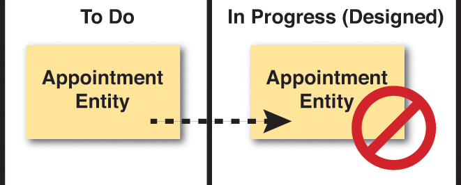
I have observed that recently Scrum has come under considerable criticism. While I don’t take sides in this criticism, I will openly state that often or even most times Scrum is being misused. I have already mentioned the tendency for teams to “design” using what I call “the task-board shuffle.” It’s just not the way Scrum was meant to be used on a software project. And, to repeat myself again, knowledge acquisition is both a Scrum tenet and a major goal of DDD but is largely ignored in exchange for relentless delivery with Scrum. Even so, Scrum is still heavily used in our industry, and I doubt that it will be displaced anytime soon.
Therefore, what I will do here is to show you how you can make DDD work in a Scrum-based project. The techniques I show you should be equally applicable with other agile project approaches, such as when using Kanban. There is nothing here that is exclusive to Scrum, although some of the guidance is stated in terms of Scrum. And since many of you will already be familiar with Scrum by putting it into practice in some form, most of my guidance here will be regarding the domain model and learning, experimenting, and designing with DDD. You will need to look elsewhere for general guidance on using Scrum, Kanban, or another agile approach.
Where I use the term task or task board , this should be compatible with agile in general, and even Kanban. Where I use the term sprint , I will also try to include the words iteration for agile in general and WIP (work in progress) as a reference to Kanban. It may not always be a perfect fit, as I am not trying to define an actual process here. I hope you will simply benefit from the ideas and find a way to apply them appropriately in your specific agile execution framework.
One of the most important means to successfully employing DDD on a project is to hire good people. There is simply no replacement for good people, and above-average developers for that matter. DDD is an advanced philosophy and technique for developing software, and it calls for above-average developers, even very good developers, to put it to use. Never underestimate the importance of hiring the right people with the right skills and self-motivation.
In case you are unfamiliar with SWOT analysis [SWOT] , it stands for Strengths, Weaknesses, Opportunities, and Threats. SWOT analysis is a way for you to think about your project in very specific ways, gaining maximum knowledge as early as possible. Here are the basic ideas behind what you are looking to identify on a project:
• Strengths: characteristics of the business or project that give it an advantage over others
• Weaknesses: characteristics that place the business or project at a disadvantage relative to others
• Opportunities: elements that the project could exploit to its advantage
• Threats: elements in the environment that could cause trouble for the business or project
At any time on any Scrum or other agile project you should feel free and inclined to use SWOT analysis to determine your project’s current situation:
1. Draw a large matrix with four quadrants.
2. Going back to the sticky notes, choose a different color for each of the four SWOT quadrants.
3. Now, identity the Strengths of your project, the Weaknesses of your project, the Opportunities on your project, and the Threats to your project.
4. Write these on the sticky notes and place them in the matrix within the appropriate quadrant.
5. Use these SWOT characteristics of the project (we are particularly thinking domain model here) to plan what you are going to do about them. The next steps you take to promote the good areas and mitigate the troublesome areas could be critical to your success.
You will have the opportunity to place these actions on the task board as you perform project planning, as discussed later.
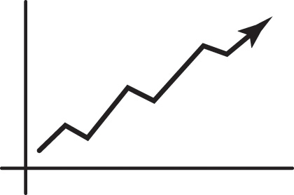
Does it surprise you to learn that you can have modeling spikes and modeling debt to pay on a DDD project?
One of the best things you can do at the inception of a project is to use Event Storming . This and related modeling experiments would constitute a modeling spike. You will have to “buy” knowledge about your Scrum product, and sometimes the payment is a spike, and a spike during project inception is almost certain. Still, I have already shown you how using Event Storming can greatly reduce the cost of necessary investment.
For certain, you can’t expect to model your domain perfectly from the start, even if you think in terms of the inception of your project as having a valuable modeling spike. You won’t even be perfect as you use Event Storming . For one thing, business and our understanding of it change over time, and so will your domain model.
Furthermore, if you intend to timebox your modeling efforts as tasks on a task board, expect to incur some modeling debt during each sprint (or iteration, or WIP). You simply won’t have time to carry out every desired modeling task to perfection when you are timeboxed. For one thing, you will start a design and realize after experimentation that the design you have does not fit the business needs as well as you expected. Yet the time limit that you are under will require you to move on.
The worst thing you could do now is to just forget everything that you learned from the modeling efforts that called out for a different, improved design. Rather, make a note that this needs to go into a later sprint (or iteration, WIP). This can be brought to your retrospective meeting 1 and turned in as a new task at your next sprint planning meeting (or iteration planning meeting, or added to the Kanban queue).
1 . In Kanban you can actually have retrospectives every day, so don’t wait for long to present the need to improve the model.
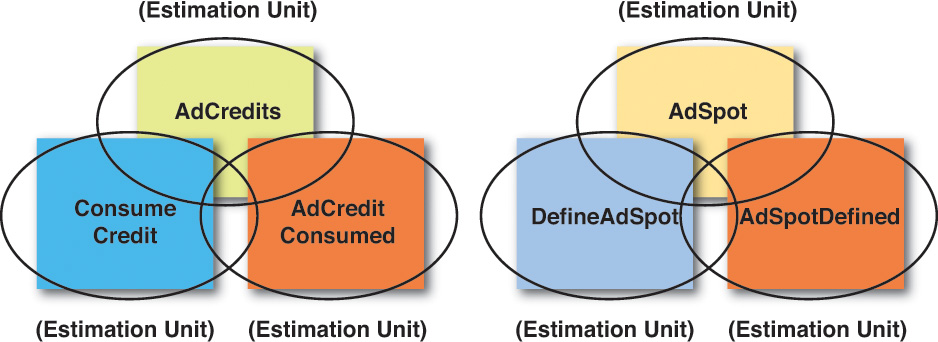
Event Storming is a tool that can be used at any time, not just during project inception. As you work in an Event Storming session, you will naturally create a number of artifacts. Each of the Domain Events , Commands , and Aggregates that you storm out in your paper model can be used as estimation units. How so?
One of the easiest and most accurate ways to estimate is by using a metrics-based approach. As you see here, create a simple table with estimation units for each component type that you will need to implement. This will take the guesswork out of estimates and provide science around the process of creating estimations of effort. Here is how the table works:
1. Create one column for Component Type to describe the specific kind of component for which the estimation units are defined.
2. Create three other columns, one each for Easy , Moderate , and Complex. These columns will reflect the estimation unit, which is in hours or fractions of hours, for the specific unit type.
3. Now create one row for each component type in your architecture. Shown are Domain Event , Command , and Aggregate types. However, don’t limit yourself to those. Create a row for the various user interface components, services, persistence, Domain Event serializers and deserializers, and so on. Feel free to create a row for every single kind of artifact that you will create in source code. (If, for example, you normally create a Domain Event serializer and deserializer along with each Domain Event as a composite step, assign an estimation value to Domain Events that reflects the creation of all of those components together in each column.)
4. Now fill in the hours or fraction of an hour needed for each level of complexity: easy, moderate, and complex. These estimates not only include the time needed for implementation but may also include further design and testing efforts. Make these accurate, and be realistic.
5. When you know the backlog item tasks (WIP) that you will work on, obtain a metric for each of the tasks and identify it clearly. You might use a spreadsheet for this.
6. Add up all the estimation units for all components in the current sprint (iteration or WIP), and this becomes your total estimation.
As you execute each sprint (iteration or WIP), tune your metrics to reflect the hours or fractions of hours that were actually required.
If you are using Scrum and you have come to detest hour estimates, understand that this approach is much more forgiving and also much more accurate. As you learn your cadence, you will fine-tune your estimation metrics to be more accurate and realistic. It might require a few sprints to get it right. Also realize that as time and experience progress, you will probably either tune your numbers lower or use the Easy or Moderate columns more readily.
If you are using Kanban and you think that estimates are completely fallacious and unnecessary, ask yourself a question: How do I know how to determine an accurate WIP in the first place in order to correctly limit our work queue? Regardless of what you may think, you are still estimating the effort involved and hoping that it is correct. Why not add a little science to the process and use this simple and accurate estimation approach?
Now that you have estimates for each component type, you can base your tasks directly off of those components. You might choose to keep each component as a single task with a number of hours or fraction thereof, or you might choose to break your tasks down a bit further. However, I suggest being careful with breaking tasks down to be too fine-grained, so as not to make the task board overly complex. As shown previously, it might even be best to combine all of the Commands and all of the Domain Events used by a single Aggregate into a single task.
Even with artifacts identified by Event Storming , you will not necessarily have all the knowledge you need to work on a specific domain scenario, story, and use case. If more is needed, be sure to include time for further knowledge acquisition in your estimates. But time for what? Recall that in Chapter 2 I introduced you to creating concrete scenarios around your domain model. This can be one of the best ways to acquire knowledge about your Core Domain , beyond what you can get out of Event Storming. Concrete scenarios and Event Storming are two tools that should be used together. Here’s how it works:
• Perform a quick session of Event Storming , perhaps just for an hour or so. You will almost certainly discover that you need to develop more concrete scenarios around some of your quick modeling discoveries.
• Partner with a Domain Expert to discuss one or more concrete scenarios that need to be refined. This identifies how the software model will be used. Again, these are not just procedures but should be stated with the goal of identifying actual domain model elements (e.g., objects), how the elements collaborate, and how they interact with users. (Refer to Chapter 2 as needed.)
• Create a set of acceptance tests (or executable specifications) that exercise each of the scenarios. (Refer to Chapter 2 as needed.)
• Create the components to allow the tests/specifications to execute. Iterate (briefly and quickly) as you refine the tests/specifications and the components until they do what your Domain Expert expects.
• Very likely some of the iteration (brief and quick) will cause you to consider other scenarios, create additional tests/specifications, and refine existing and create new components.
Continue this until you have acquired all the knowledge necessary to meet a limited business objective, or until your timebox expires. If you haven’t reached the desired point, make sure to incur modeling debt so that this can be addressed in the (ideally near) future.
Yet how much time will you need from Domain Experts ?
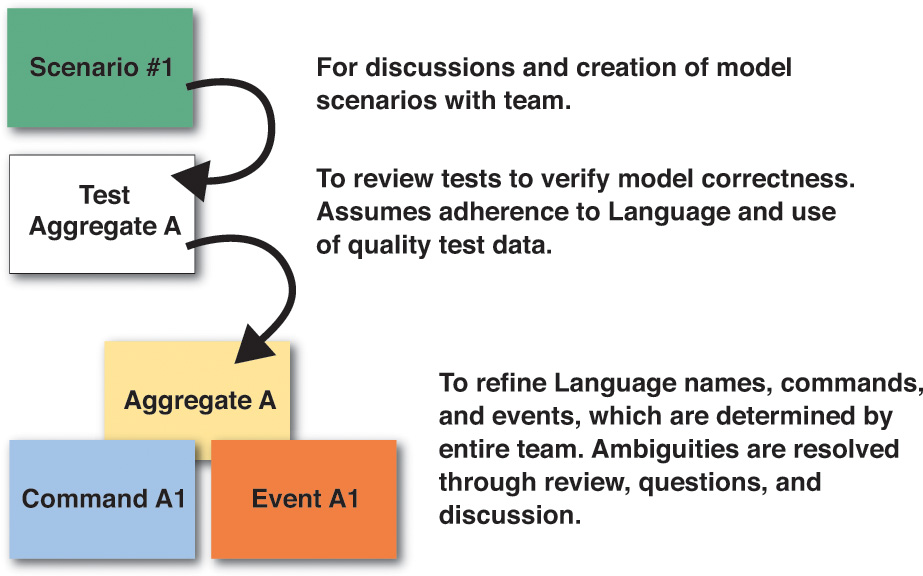
One of the major challenges of employing DDD is getting time with Domain Experts , and without overdoing it. Many times those who are Domain Experts on a project will have loads of other responsibilities, hours of meetings, and possibly travel. With such potential absences from the modeling environment, it can be difficult to find enough time with them. So, we had better make the time we use count and limit it to just what is necessary. Unless you make modeling sessions fun and efficient, you stand a good chance of losing their help at just the wrong time. If they find it valuable, enlightening, and rewarding, you will likely establish the strong partnership that you will need.
So the first questions to answer are “When do we need time with Domain Experts ? What tasks do they need to help us perform?”
• Always include Domain Experts in Event Storming activities. Developers will always have a lot of questions, and Domain Experts will have the answers. Make sure they are in the Event Storming sessions together.
• You will need Domain Experts’ input on discussions and the creation of model scenarios. See Chapter 2 for examples.
• Domain Experts will be needed to review tests to verify model correctness. This assumes that the developers have already made a conscientious effort to adhere to the Ubiquitous Language and to use quality, realistic test data.
• You will need Domain Experts to refine the Ubiquitous Language and its Aggregate names, Commands , and Domain Events , which are determined by the entire team. Ambiguities are resolved through review, questions, and discussion. Even so, Event Storming sessions should have already resolved most of the questions about the Ubiquitous Language.
So, now that you know what you will need from Domain Experts , how much time should you require of them for each of these responsibilities?
• Event Storming sessions should be limited to a few hours (two or three) each. You may need to hold sessions on consecutive days, such as for three or four days.
• Block out generous amounts of time for scenario discussion and refinement, but try to maximize the time for each scenario. You should be able to discuss and iterate on one scenario over perhaps 10 to 20 minutes of time.
• For tests, you will need some time with Domain Experts to review what you have written. But don’t expect them to sit there as you write the code. Maybe they will, and that’s a bonus, but don’t expect it. Accurate models require less time to review and verify. Don’t underestimate the ability of Domain Experts to read through a test with your help. They can do it, especially if the test data is realistic. Your tests should allow the Domain Expert to understand and verify around one test every one to two minutes, or thereabouts.
• During test reviews, Domain Experts can provide input on Aggregates , Commands , and Domain Events , and perhaps other artifacts, as to how they adhere to the Ubiquitous Language. This can be accomplished in brief amounts of time.
This guidance should help you use just the right amount of time with Domain Experts , and to limit the amount of time that you need to spend with them.
In summary, in this chapter you learned:
• About Event Storming , how it can be used, and how to perform sessions with your team, all with a view to accelerating your modeling efforts
• About other tools that can be used along with Event Storming
• How to use DDD on a project and how to manage estimates and the time you need with Domain Experts
For an exhaustive reference covering the implementation of DDD on projects, see Implementing Domain-Driven Design [IDDD] .